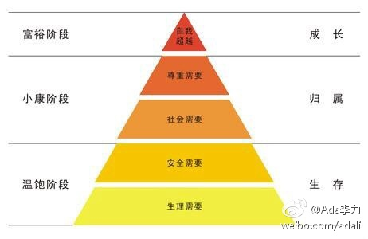

#运营#临近春节，请专属客服给服务的医师做游戏发红包。同事提议建个群拉人直接发红包。我说专属客服的定位就是一对一的服务，红包是为了让医师认识和记住你这个专属客服，一旦有什么事情第一时间会想到来找专属客服。如果是群发红包就做不到这个效果。
#运营#有客服同事提议给医师发祝福语，我本来觉得没必要。现在祝福语太多，很多是刷存在感的。我自己的例子就是发现国内过节发祝福语的，绝大部份是没见过面的人，而且是群发。这类祝福语我第一时间是删除，很扰民的。但同事的积极建议值得鼓励，只是要强调下，祝福语一定要冠上对方姓名，千万不要群发。
即使沟通没问题，所有问题都可以抛到桌面上说，如果没有高效的决策机制，沟通一样会成为大问题，说服人是个成本很高的事情，这就是为什么要有大股东，要有CEO，有不同意见时，有人可以拍板。@Ada李力:#创业#当沟通成为一个问题时，很多时候靠机制解决不了，因为归根到底是人的问题。当有人不肯面对面把话说出来，而习惯只在背后窃窃私语，再好的沟通机制都没用。解决办法只有换人。
有时候，从局外人来看自己习以为常或者深信不疑的事情，就会发现荒谬和可笑。记得有次看到香港人写的北京游记，提到广场看升旗：“那么多人挤在一起，绝大部份时间都是在仰头看一根光秃秃的长杆子……”。我看得爆笑不已，每次看到“升旗”这两个字，就会想起这个描述。最近站在局外人角度看程序员，也常常有类似感觉。
#运营# 90后同事提出个跟医师玩掷骰子和猜拳的游戏，我问用什么工具实现, 回复说工具自带，我这个70后竟然一直不知道也没玩过。问了另外几个同事，三个90后也都知道，一个80后不知道。游戏活动还是90后来策划会比较好玩。不过服务的医师大部分是80后70后，这是更好玩的地方。
回复@tortoise涂:婚姻里两个人各司其职，分主外主内啥的。实在讲不清道理，靠感情亲情混混吧。//@tortoise涂:公司可以有大股东，家庭关系怎么办呢@Ada李力:#创业#当沟通成为一个问题时，很多时候靠机制解决不了，因为归根到底是人的问题。当有人不肯面对面把话说出来，而习惯只在背后窃窃私语，再好的沟通机制都没用。解决办法只有换人。
#创业#今天跟前同事聊天，感觉对方也有这种思路：互联网是高级形态，进入传统行业就是要颠覆对方的。我说抱着这种思路进入传统行业，一定会栽跟头。你看着很土很low的传统行业做生意的模式，其实是现有环境下综合效率最高的方法了。颠覆别人前，至少先了解别人是怎么赚到钱的，对不对？至于拿电商颠覆了传统零售的现象，来套用在医疗行业里，有点纸上谈兵的意味了。
//@小鹿弯弯到何方：昨天看的1000名经历长时间婚姻后仍自觉婚姻快乐的人自认为的经验，认为相互尊重和信任比沟通更重要。沟通总有一个点就说不下去了，尊重和信任能让人在不能充分理解的时候，仍然合作良好@Ada李力:#创业#当沟通成为一个问题时，很多时候靠机制解决不了，因为归根到底是人的问题。当有人不肯面对面把话说出来，而习惯只在背后窃窃私语，再好的沟通机制都没用。解决办法只有换人。
#创业#医师反馈App用起来还是有难度，公司里一种意见是要加强培训，做更细的说明文档或视频，甚至手把手地教会医师使用。我说根本解决办法不是做培训，而是要把App功能简化，简化到任何一个新手进来根据指引和提示就能自己完成所有操作。如今App已堆砌了太多的东西，谁刚开始用都会有些晕。加东西容易，砍东西就难得多。另外有医师反馈上手难，但也有不少医师觉得使用上没有问题。而实际上如果App提供解决方案是医师的痛点，使用是否容易并没那么重要了，难用也照样会有人用。等验证完痛点问题的解决方案后，App的易用性才会成为重点攻坚方向。
当我刚跨入新行业时，是抱着过往清零和行业小白的心态的。而对新行业了解最快的方式是做业务，做销售。互联网种种理论再性感，也是要揉入到实际业务中去应用才能有效果。互联网人IT行业的人进入传统行业最大的门槛就是不熟悉业务。@Ada李力:#创业#今天跟前同事聊天，感觉对方也有这种思路：互联网是高级形态，进入传统行业就是要颠覆对方的。我说抱着这种思路进入传统行业，一定会栽跟头。你看着很土很low的传统行业做生意的模式，其实是现有环境下综合效率最高的方法了。颠覆别人前，至少先了解别人是怎么赚到钱的，对不对？至于拿电商颠覆了传统零售的现象，来套用在医疗行业里，有点纸上谈兵的意味了。
#读书# 民科为什么总是受到嘲笑，因为他们冥思苦想出来发现的“真理”，可能是几百年前别人已经做出来的东西，比民科人士总结得更全面，证据更足。看书时有人说人类有三大硬性需求：求生本能，性冲动和渴望伟大。貌似新发现。其实马斯洛需求层次理论对此阐述得更全面更清晰。每每看到这种新发现，都会督促我回头重读经典。
国内的心理学和社会学还在初级阶段//@小山妈：科技虽然进步很多，但是人性没有变化，涉及人性方面的书籍也没啥实质变化。只不过，现在很多心理学，社会学研究使得人们对人性更加了解一些，这些方面的研究还是值得的。@Ada李力:#读书# 民科为什么总是受到嘲笑，因为他们冥思苦想出来发现的“真理”，可能是几百年前别人已经做出来的东西，比民科人士总结得更全面，证据更足。看书时有人说人类有三大硬性需求：求生本能，性冲动和渴望伟大。貌似新发现。其实马斯洛需求层次理论对此阐述得更全面更清晰。每每看到这种新发现，都会督促我回头重读经典。
造成这种局面是组织架构上的问题//@Adela可爱多：互相指望着妙手回春@Ada李力:#运营#靠谱销售在推销前，是要评估要销售的产品的市场竞争力的。而靠谱运营在接手产品前，一样要对产品做评估。先天不足的产品，运营就不该接手，不然结果就是扯皮。话语权不够大的话，也会成为产品失败的替罪羊。
#运营#做社群运营的人，可以给自己几个定位给社群成员端茶倒水的跑堂人员社群成员聚集地的咖啡馆老板人口众多的家族族长聚集社群成员的虚拟城市市长征战四处的军队领袖……你对自己什么地位，社群就会按照你的设想在发展